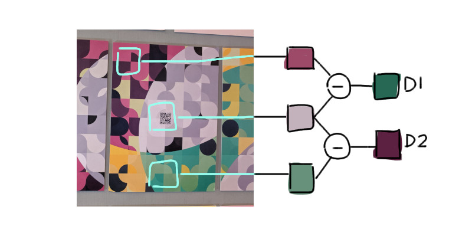
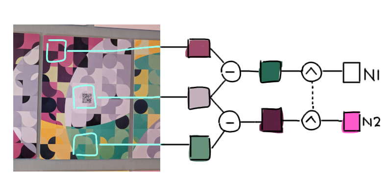
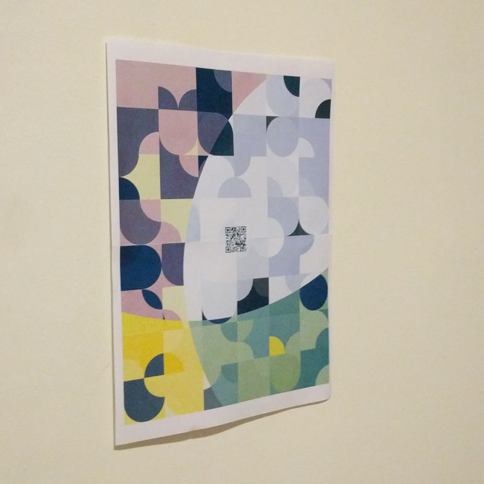
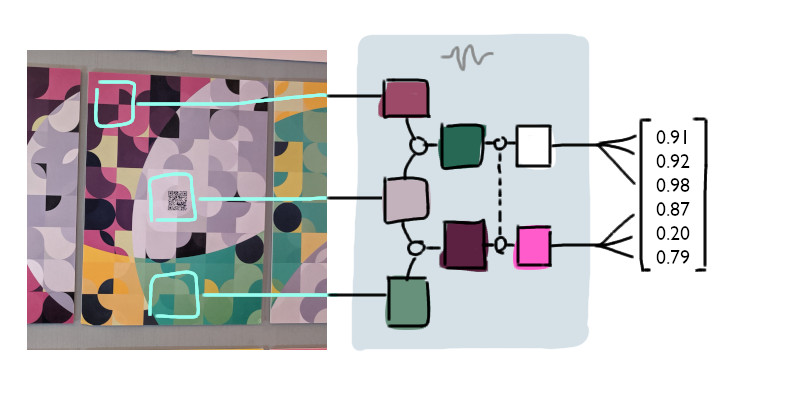
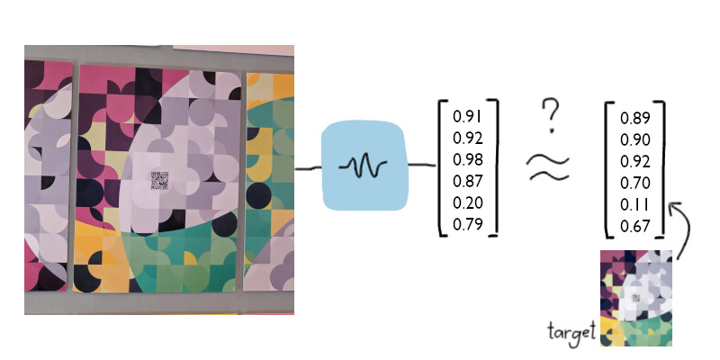

Dimensions
Part 2. Augmented reality
The idea of including augmented reality into the art piece was wholly inspired by AR.js, an awesome project that brings fast and easy augmented reality to the web.
The AR.js demo looked really cool and smooth.
With augmented reality, the art piece became an art experience. The planned user flow for the experience went like this:
- User sees the piece and notices the QR code.
- User whips out smartphone to scan the QR code.
- Smartphone is directed to the app.
- App opens the phone’s camera to track the piece in 3D space.
- App superimposes virtual art on the physical art, augmenting reality. ✨
Implementing object tracking (step 4) proved to be difficult. With AR.js, it required special markers in order to track the 3D scene.
The prints were already finalized, so I couldn’t add AR markers on it by then. Plus, the piece already had a QR code slapped on it. Adding any more tags would’ve ruined it.
I looked around for alternatives like Tracking.js, OpenCV, and even TensorFlow, but ultimately implemented my own image recognition algorithm.
Recognizing the piece
Image recognition is a computer vision problem of determining whether an image contains some specific object or not. For this project, I applied a simple image recognition algorithm to determine when the piece has been aligned in front of the camera.
The app recognizes when the target piece has been aligned.There exists many solutions to this problem, ranging from simple histogram matching to convolutional neural networks. These days everyone just uses neural networks and deep learning if possible.
These technologies power some apps like face filters, but are also used for things like mass camera surveillance.
In my case however, I’ve simplified the problem to determining whether any of the three specific art pieces is in the center frame in the user’s camera, or not. No position tracking.
This reduced the problem to a yes/no problem.
Consequently, the algorithm was relatively simple. It’s just a preprocessing step and a straightforward “feature matching” of the target images.
First, some theory. Phone camera sensors don’t actually pick up the true color of an object. The perceived color is affected by room lighting, camera quality, and other factors.
 True color (TC) vs perceived color (PC)
True color (TC) vs perceived color (PC)
If we directly used data from the camera feed to compare against the target images, it would fail most of the time. Preprocessing was necessary. Let's call this preprocessing "normilization".
I've come up with a model for the perceived color, roughly based on graphics programming illumination models:
PC = TC * a + b
PCis the color perceived from the camera sensor.TC(unknown variable) is true color of the material.aandb(unknown variables) are parameters that together describe the vague real-world lighting variables like white balance, environmental illumination, camera sensor quality, and other factors.
The algorithm starts by getting the average colors of three predetermined regions over the camera image.
 The regions were specifically chosen to capture key features.
The regions were specifically chosen to capture key features.
Let’s call the colors PC1, PC2, and PC3.
The top (PC1) and middle (PC2) colors are subtracted, as well as the middle (PC2) and bottom (PC3); like a 1-dimensional convolution. This produces two difference colors.
Let’s call the resulting colors D1 and D2:

D1 = PC2 - PC1
D2 = PC3 - PC2
By subtracting two perceived colors, the unknown lighting variable b could be eliminated:
D1 = PC2 - PC1
= (TC2 * a + b) - (TC1 * a + b)
= TC2 * a - TC1 * a
= (TC2 - TC1) * a
Expanding the PC terms according to the model above will cancel out the b terms, leaving just TC and a terms.
D1 = (TC2 - TC1) * a
D2 = (TC3 - TC2) * a
To eliminate the remaining lighting variable a, the values were normalized, that is, divided each by the highest value.
Let’s call the normalized values N1 and N2, for normalized D1 and D2, respectively.

N1 = D1 / max(D1, D2)
N2 = D2 / max(D1, D2)
I’m not showing the full solution here, but normalizing will get rid of the common factor a. Thus:
N1 = (TC2 - TC1) / max(TC2 - TC1, TC3 - TC2)
N2 = (TC3 - TC2) / max(TC2 - TC1, TC3 - TC2)
As you can see the final values N1 and N2 are not affected by the lighting parameters at all. They are purely derived from true color. According to the model anyway.
The point of this preprocessing was so that the algorithm can be robust across different lighting conditions and various smartphone cameras.
 Actual test piece used in development. Even this badly-printed image in poor lighting can be recognized.
The final step was to combine the RGB channels of the normalized colors into one series of numbers, called the feature vector of the image, i.e., a set of numbers that summarize the image.

featureVector = [N1.r, N1.g, N1.b, N2.r, N2.g, N2.b]
Turning the image into a vector made the problem of comparing image similarity a mathematical one. If the numbers match, then the images match.
All it needed was to compare the feature vector of the processed camera image against the feature vector of the target image.
 Euclidean distance can be used to compute vector “similarity”.
So, in application of theory, first I got the phone’s camera stream via the MediaDevice API, connecting the camera to a <video> element.
On each frame of the `<video>` stream, the image is processed into a feature vector. Then the feature vector is compared against the target vectors.
If the [distance](https://en.wikipedia.org/wiki/Euclidean_distance) between the vectors are kept below some threshold, then the image is a match.
Once it gets a match the **augmented reality** experience starts rolling in.
---
## Augmenting reality
The vision for the augmented reality part was that the tiles in the piece would come alive, burst out of the piece, and start drawing streaks of paint, ink, or whatever in the air, depending on the tile type.

It was basically going to be a particle system.
This was rendered using [**three.js**](https://threejs.org/). I’ve used three.js before and it was great, with easy-to-learn APIs and good examples.
I was quickly able to sketch out virtual objects in space as a prototype.
<video muted="" autoplay="" loop="" playsinline="">
<source src="../media/dimensions_ar1.mp4">
<a href="../media/dimensions_ar1.mp4">Prototype video</a>
</video>
This was made by overlaying a transparent three.js `<canvas>` onto the `<video>` that’s streaming the camera feed.
A three.js extension called `DeviceOrientationControls` provides synchronization between the device’s orientation and the virtual camera.
One caveat though is that only the orientation can be tracked. Tracking movements across space weren’t possible yet, so virtual objects would appear follow the device when it moves.
The experience was designed around this limitation by keeping the objects at constant distance to the user, subtly hinting that there’s no need to move or walk, only looking around.
<!-- TODO demo video -->
<small class="small-block">There was a bug on iOS Safari with orientation tracking, which apparently was just introduced July 2019, one month before the event. Sadly some iPhone users did not get the full experience.</small>
Modeling the tiles as 3D objects were simply extrusions of the tiles’ 2D shape paths, made very easy using three.js’s `ExtrudeGeometry`.
The “paint” trails were made using an old unmaintained library called [**TrailRendererJS**](https://github.com/mkkellogg/TrailRendererJS), which surprisingly still works, although it bugs out when the virtual camera isn’t at the origin.

The floating tiles’ movement behavior were guided by a smooth triangle wave function:
<span>
<span class="caption">`y = arccos(0.95 sin(x))`</span>
</span>
This triangle wave path was wrapped around a virtual cylinder around the user’s position.
With each floating tile following a variant of this path, the result was an organized chaos of criss-crossing particles orbiting the user.
<video muted="" autoplay="" loop="" playsinline="">
<source src="../media/dimensions_trail.mp4">
<a href="../media/dimensions_trail.mp4">Demo video</a>
</video>
One interesting experiment was when the trails were allowed to go on indefinitely. The trails would eventually paint the whole scene, producing a nice pattern.
<span>
<span class="caption">Trail art</span>
</span>
When it finally exhibited, I mostly watched from the sidelines, taking notes on how people interacted. It’s like live testing on prod.
There were some UX issues that had to be fixed. It wasn‘t as seamless as I’ve hoped, and explicit instructions on how to use it were needed.
It went smoothly for the most part, after a few hotfixes. Seeing people react to it was great! ⭐️
The iOS bug was never fixed. 🤖
<span class="bleed">
<div style="display: flex; max-height: 80vh">
<video muted="" autoplay="" loop="" playsinline="" style="flex: 1 1 auto; object-fit: cover; width: 50%">
<source src="../media/dimensions_2.mp4">
<a href="../media/dimensions_2.mp4">Reaction video</a>
</video>
</div>
</span>
You can give it a try right on this page!
Simply open this page on a desktop, and then point your smartphone camera to the following image, assuming your camera app has a QR code scanning feature.
<span class="bleed"></span>
<span class="caption">Go to [tiny.cc/kdi](https://kalabasa.github.io/dimensions/) on phone if QR doesn’t work.</span>
Here’s the final set!
It has been a really fun and challenging project! 🎉
</video></canvas></video></video>